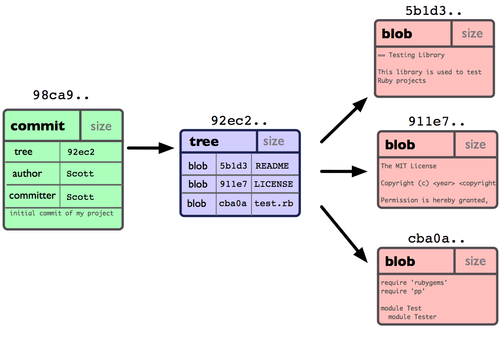

git
- git文件状态

- 项目初始化
git init
- 增加文件
git add README.md
- 提交
git commit -m 'comment'
- 克隆
git clone https://github.com/lightxue/vim_config.git vim_config
- 查看状态
git status
.gitignore列出忽略的文件模式
- 空行和#打头的行被git忽略
- 可以使用glob语法
- 最后跟/的说明要忽略的是目录
查看unstage的文件的修改部分
git diff
- 查看已提交的文件与上次提交时的快照之间的差异
git diff --cached
git diff --staged
- 移除，从暂存区移除
git rm file
- 移除跟踪(track)但不删除文件
git rm --cached file
- 重命名
git mv filea fileb
- 查看log
git log
// 查看提交内容的diff，这个不错
git -p
// 最近两次更新
git -2
// 增改行数统计
git log --stat
// 指定展示样式，有online, short, full, fuller
git log --pretty=online
// 限制输出长度，有since, until, author, committer
git log --since=2.weeks
// 看分支分化衍合情况
git log --graph
- 撤消最后一次提交
git commit --amend
- 取消已经暂存的文件
git reset HEAD file
- 取消对文件的修改
git checkout -- file
- 添加远程仓库
git remote add pb git://github.com/paulboone/ticgit.git
- 远程抓取数据
git fetch remote-name
- 推送数据到远程仓库
git push origin master
- 查看远程仓库信息
git remote show remote-name
- 远程仓库删除和重命名
git remote rename remote-name-old remote-name-new
git remote rm remote-name
- 标签
// 查看标签
git tag
// 创建含附注的标签
git tag -a v1.4 -m 'my version 1.4'
// 查看标签的版本信息
git show v1.4
// 把所有tag push到远程仓库(默认情况push是不会把标签推到远程服务器)
git push --tags
// 创建轻量级标签
git tag v1.4-1w
- alias
git config --global alias.co checkout
git config --global alias.br branch
git config --global alias.ci commit
git config --global alias.st status
git config --global alias.unstage 'reset HEAD --'
git config --global alias.last 'log -3 HEAD'
- 默认编辑器选择
git config --global core.editor vim
- 打开高亮
git config --global color.ui true
- 查看配置信息
git config --list
- 记住密码1小时
git config --global credential.helper 'cache --timeout 3600'
- Show information about files in the index and the working tree
git ls-files
- 指定合并编辑器
git config --global merge.tool vimdiff
- 检查已有配置信息
git config --list
- 不需要
git add，直接把track的文件放到staged里并提交
git commit -a
- 增加远程仓库
git remote add pb git://github.com/paulboone/ticgit.git
- 查看远程仓库信息
git remote show origin
- 重命令远程仓库
git remote rename
- 列出现有tag
git tag
git tag -l 'v1.4.2.*'
Git 使用的标签有两种类型：轻量级的（lightweight）和含附注的（annotated）。轻量 级标签就像是个不会变化的分支，实际上它就是个指向特定提交对象的引用。而含附注标 签，实际上是存储在仓库中的一个独立对象，它有自身的校验和信息，包含着标签的名字， 电子邮件地址和日期，以及标签说明，标签本身也允许使用GNU Privacy Guard (GPG) 来 签署或验证。一般我们都建议使用含附注型的标签，以便保留相关信息；当然，如果只是临 时性加注标签，或者不需要旁注额外信息，用轻量级标签也没问题。
创建一个含附注类型的标签
git tag -a v1.4 -m 'my version 1.4'
git tag -a v1.2 9fceb02 // commit校验和
- 创建一个轻量级的标签
git tag v1.4
- 查看相应标签的版本信息
git show v1.4
- 默认情况下，git push 并不会把标签传送到远端服务器上，只有通过显式命令才能分享标签到远端仓库
git push origin v1.5
// 一次推送所有（本地新增的）标签上去
git push origin --tags
- 给git加自动补全功能
source ~/.git-completion.bash
- 提交3个文件，会建立三个文件的blob对象，文件所在目录的tree对象和一个commit对象

- 分支是一个可移动的指针，指向commit对象

- HEAD指针指向当前使用的分支

- 创建分支testing
git branch testing
- 切换到testing分支
git checkout testing
- 删除分支hotfix
git branch -d hotfix
- 把issue53分支的代码合并到当前分支
git merge issue53
// 如果有冲突，解决完后git add表示冲突解决
- 列表当前分支列表
git branch
// 详细信息
git branch -v
// 哪些分支已经合到当前分支
git branch --merged
// 还没合并的分支
git branch --no-merged
- 恢复删除的分支
Yes, you should be able to do
git reflogand find the SHA1 for the commit at the tip of your deleted branch, then justgit checkout [sha]. And once you're at that commit, you can justgit checkout -b [branchname]to make a recreate the branch from there.
- 配置全局用户名，邮箱
git config --global user.name 'lightxue'
git config --global user.email 'bkmgtp@gmail.com'
- Windows上pull和push不了的问题解决
git config --global sendpack.sideband false